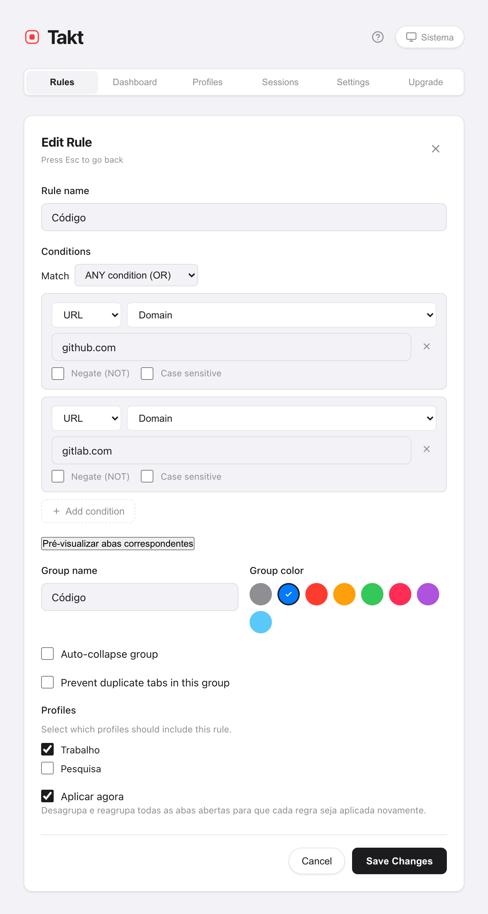
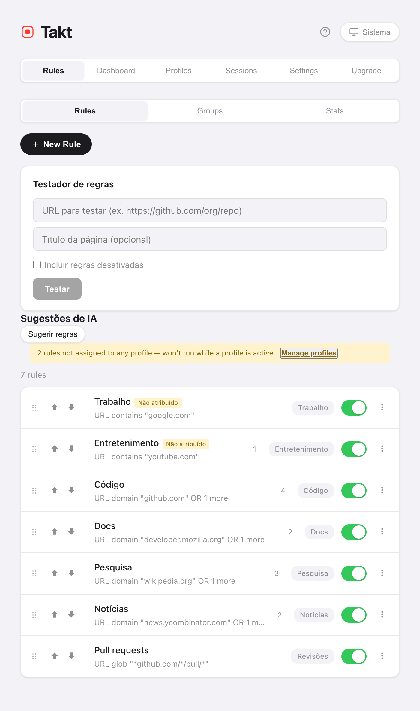

Resposta curta: instale o Takt, crie uma regra como URL domain github.com → grupo "Code", azul e salve. A partir daí, toda aba do GitHub vai para o grupo azul "Code" enquanto carrega.
- Free: 5 regras, com correspondência por contains (contém), exact (exata) ou domain (domínio).
- Premium: regras ilimitadas, padrões glob e regex, correspondência pelo título da página, até 10 condições AND/OR.
- A correspondência acontece no seu computador. Sem conta, sem analytics.
Por que os grupos de abas do Chrome não se organizam sozinhos?
Os grupos de abas do Chrome são um arquivo sem arquivista. Você clica com o botão direito, escolhe "Adicionar guia ao grupo" e repete. Abra vinte links numa manhã de trabalho e você arquiva vinte vezes. Ou, mais provável, não arquiva nenhuma.
O Chrome tinha um recurso de IA, "Organizar guias", para uma arrumação pontual, mas o Google o desativou em 2025. Hoje o Chrome não agrupa mais as abas por você. E nem esse recurso seguia instruções: você não conseguia dizer a ele "pull requests vão sempre para Reviews". Uma regra consegue.
Como criar uma regra para agrupar abas?
- Instale o Takt pela Chrome Web Store.
- Abra a página de opções do Takt e clique em New Rule.
- Adicione uma condição. URL · Domain · github.com pega github.com e todos os subdomínios.
- Dê um nome ao grupo, escolha uma cor e salve.
Deixe Aplicar agora marcado e o Takt reagrupa na hora as abas que já estão abertas. As novas abas são agrupadas enquanto carregam.

Qual tipo de correspondência devo usar?
A maioria das pessoas só precisa de Domain. Use os outros quando um domínio for amplo demais.
| Tipo de correspondência | Padrão | Pega | Plano |
|---|---|---|---|
| Domain | google.com | docs.google.com, mail.google.com, google.com | Free |
| Contains | localhost | http://localhost:3000/api | Free |
| Exact | https://mail.google.com/mail/u/0/#inbox | Só essa URL | Free |
| Glob | *github.com/*/pull/* | Todo pull request, de qualquer repositório | Premium |
| Regex | jira\..*/browse/PROJ-\d+ | Tickets de um projeto | Premium |
Qualquer condição também pode ser negada (a URL NÃO contém google.com) ou diferenciar maiúsculas de minúsculas. O Premium acrescenta a correspondência pelo título da página e a combinação de até 10 condições com AND ou OR.
E se duas regras corresponderem à mesma aba?
Vale a primeira que corresponder. As regras são verificadas do topo da lista para baixo, e a verificação para no primeiro acerto.
Então ordene da mais específica para a mais ampla. Uma regra "Reviews" para pull requests precisa ficar acima de uma regra "Code" para todo o GitHub, senão todo pull request acaba em "Code". Arraste a regra, ou use os botões ↑/↓, para movê-la.

Como testar uma regra antes de confiar nela?
De duas formas, ambas na página Rules:
- Testador de regras. Cole uma URL (e, se quiser, um título de página). O Takt mostra qual regra dispararia.
- Pré-visualizar abas correspondentes. Dentro do editor, lista as abas já abertas que a regra pegaria, antes de você salvar.
Um kit inicial de cinco regras
Cinco regras cobrem a maioria dos dias de trabalho, e cinco é exatamente o limite do plano gratuito.
| Grupo | Condição |
|---|---|
| Código | Domain github.com |
| Documentação | Domain developer.mozilla.org |
| E-mail e agenda | Domain google.com |
| Dev local | Contains localhost |
| Ver depois | Domain youtube.com |
Não sabe o que escrever? O painel Insights sugere regras a partir dos sites que você já mantém abertos.
O que as regras não fazem
Regras pegam o que você mandou pegar. Uma aba de um site para o qual você nunca criou regra fica sem grupo. Se preferir não escrever regras, mude o modo de agrupamento para Por categoria ou Por IA.
Crie uma regra. Veja a próxima aba se arquivar sozinha.
Adicionar o Takt ao Chrome, grátisPerguntas frequentes
O Chrome agrupa abas automaticamente sem extensão?
Não. O Chrome sugeria grupos com um recurso de IA, "Organizar guias", mas o Google o desativou. Hoje você cria os grupos de abas do Chrome à mão. Uma extensão baseada em regras, como o Takt, agrupa as abas automaticamente e manda sempre os mesmos sites para o mesmo grupo.
Quantas regras posso criar no plano gratuito?
5 regras, com uma condição cada, usando correspondência por contém, exata ou domínio. O Premium (US$ 3/mês ou US$ 30/ano) remove o limite.
Posso pausar uma regra sem excluí-la?
Sim. Cada regra tem um botão liga/desliga na lista. Uma regra desativada mantém as configurações e para de corresponder.
O Takt envia minhas URLs para algum lugar para aplicar as regras?
Não. A correspondência roda no seu navegador, com regras armazenadas localmente. Veja como o Takt mantém os dados no seu computador.